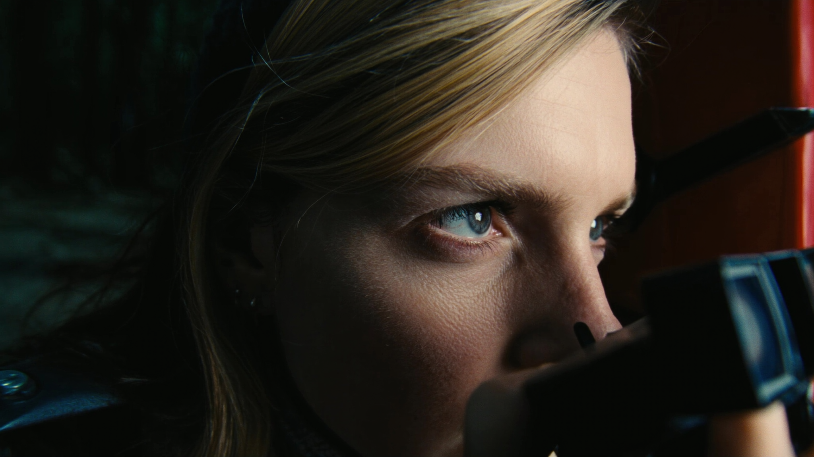
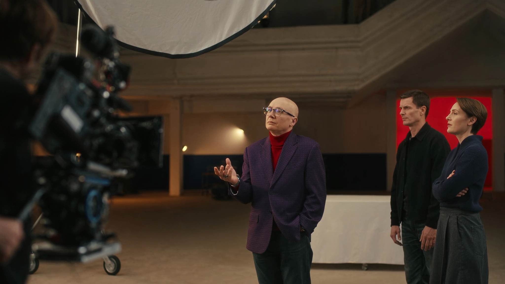
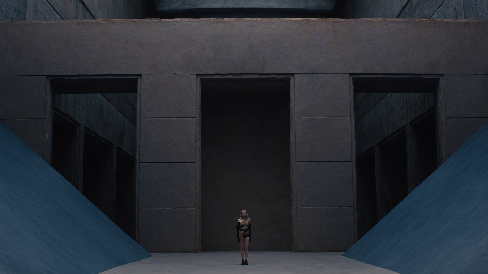
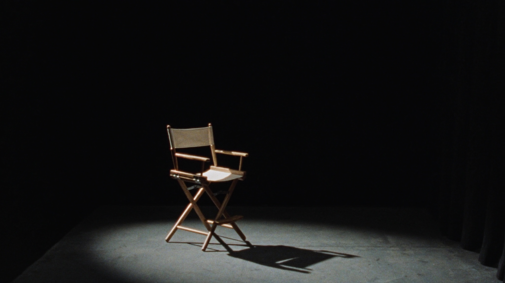

LE
RÉALISATEUR
Découper un scénario, penser en plans, diriger des acteurs, tenir une équipe — le métier qui transforme des pages en un monde qu'on peut regarder.
Réalisateur, ce n'est pas "avoir des idées". C'est faire tenir un système.
Le réalisateur ne fait presque rien de ses mains — il ne cadre pas, il ne monte pas, il ne joue pas. Son travail est de tenir une vision cohérente à travers des dizaines de décisions prises par d'autres.
🎯 Ce qu'il décide
Le sens de chaque scène, le ton général, ce que le spectateur doit ressentir et à quel moment — puis il traduit ça en instructions concrètes pour chaque chef de poste.
🤝 Ce qu'il ne fait pas seul
Il ne choisit pas la focale, ne place pas le canapé, ne coupe pas le montage. Il valide, oriente, arbitre — avec des collaborateurs experts dans chaque domaine.
🧭 Sa vraie compétence
Communiquer une intention floue (« je veux que ça fasse peur, mais une peur triste ») en décisions précises que la DP, le décorateur et l'acteur peuvent exécuter.
Neuf chapitres, de la page blanche au dernier clap.
Clique sur un chapitre pour l'ouvrir. Chacun a un exercice pratique, et au moins une source externe pour aller plus loin.
Lire et découper un scénario
Avant de penser à une seule image, le réalisateur lit le scénario au moins trois fois — une fois comme spectateur, une fois comme technicien, une fois comme metteur en scène. Le découpage narratif consiste à identifier les beats (les unités dramatiques) de chaque scène : qu'est-ce qui change entre le début et la fin ? Si rien ne change, la scène n'a pas sa place dans le film.

- Que veut le personnage principal de la scène ? Qu'obtient-il vraiment ?
- Quelle information le spectateur apprend-il qu'il ne savait pas avant ?
- Si je supprime cette scène, qu'est-ce que le film perd ?
Résume chaque scène d'un film en une phrase d'action
- Choisis un film de 90 minutes que tu connais bien.
- Liste ses 8 à 10 scènes principales.
- Pour chacune, écris une phrase du type "X veut Y mais obtient Z".
- Vérifie : est-ce que la suite de phrases raconte, à elle seule, toute l'histoire ?
La grammaire du plan
Un réalisateur n'a pas besoin de savoir régler une caméra — mais il doit savoir parler en plans pour se faire comprendre de sa DP en une phrase, sur un plateau où chaque minute coûte cher.

| Terme | Effet dramatique |
|---|---|
| Règle des 180° | Garder la caméra du même côté de l'action pour ne jamais désorienter le spectateur |
| Eyeline match | Faire correspondre les regards entre deux plans pour créer un échange crédible |
| Plan-séquence | Un seul plan continu — intensifie la présence et le temps réel |
Choisis l'échelle de plan pour 5 émotions
- Liste 5 émotions (peur, honte, joie, colère froide, soulagement).
- Pour chacune, choisis l'échelle de plan qui la sert le mieux, et justifie en une phrase.
Le blocking : mettre les corps dans l'espace
Le blocking, c'est où tu places les acteurs et comment ils bougent dans le cadre. Ce n'est jamais neutre : celui qui est debout domine celui qui est assis, celui qui est au centre attire l'œil, la distance entre deux corps raconte leur relation avant qu'ils ouvrent la bouche.

Change le pouvoir sans changer le texte
- Prends une scène de dialogue à deux personnages (même une scène de film que tu aimes).
- Imagine-la avec A debout, B assis. Puis l'inverse. Puis les deux debout, à distance inégale.
- Note comment le rapport de pouvoir change sans qu'un mot ne bouge.
Diriger des acteurs
Le premier réflexe d'un débutant est de diriger par le résultat (« sois plus triste »). Le résultat n'est pas jouable — seule une action l'est. On dirige un acteur par des verbes, jamais par des adjectifs : ce principe est développé en détail dans le manuel de formation acteur de ce même centre (voir « L'Acteur Vivant »), et il s'applique à l'identique côté réalisation.

Transforme trois adjectifs en verbes d'action
- Écris trois notes de direction "par défaut" : "sois plus drôle", "sois plus intense", "sois plus naturel".
- Réécris chacune en une consigne d'action jouable, dirigée vers un partenaire.
Construire un plan de tournage
Le découpage technique traduit chaque scène en une liste de plans précis — angle, échelle, mouvement. Improviser sur le plateau coûte cher : le découpage se fait en amont, seul ou avec la DP, pour que le jour du tournage, chaque minute serve.

Découpe une scène de 5 répliques en plans
- Prends une scène courte (5 répliques, 2 personnages).
- Liste chaque plan : échelle, angle, ce qu'il montre, sa durée approximative.
- Compte : combien de plans minimum pour raconter la scène sans perdre le spectateur ?
Le langage visuel : ton, couleur, référence
Le réalisateur ne choisit pas la lumière, mais il doit pouvoir dire à sa DP et à son décorateur, en mots simples, l'ambiance qu'il cherche — et leur montrer des références. Un moodboard vaut mille adjectifs.


Traduis un scénario imaginaire en trois adjectifs visuels
- Invente un pitch de film en 2 phrases.
- Choisis 3 adjectifs pour son univers visuel (ex. "aride, symétrique, froid").
- Trouve 6 images de référence qui incarnent ces 3 mots.
Penser en montage dès le tournage
Un bon réalisateur tourne toujours en pensant à la salle de montage : quelle couverture (coverage) le monteur aura-t-il pour construire le rythme ? Un plan magnifique mais sans plan de coupe peut bloquer toute une scène en post-production.

Prévois les plans de coupe d'une scène
- Reprends ta scène de l'exercice 05.
- Liste 3 plans de coupe (inserts, réactions) qui sauveraient le montage si le plan principal ne fonctionnait pas.
Diriger une équipe
Un plateau est une petite entreprise qui se monte et se démonte en une journée. Le réalisateur ne donne pas d'ordres à tout le monde — il parle à ses chefs de poste (DP, décorateur, son, costume), qui relaient à leurs équipes. Court-circuiter cette chaîne casse la confiance, même avec de bonnes intentions.

Écris un brief à un chef de poste
- Choisis un poste (décorateur, DP, costume).
- Écris le brief que tu lui donnerais pour une scène — en 3 phrases maximum, sans micro-manager les détails de son métier.
Trouver son style personnel
Le style n'est pas un choix esthétique qu'on plaque sur un film — c'est la conséquence de choix répétés : les mêmes échelles de plan, les mêmes silences, les mêmes obsessions visuelles, film après film. Voir la section « Références créatives » ci-dessous pour trois voies très différentes vers un style reconnaissable.
Nomme ce qui revient déjà dans ton regard
- Liste 5 films ou scènes qui t'ont marqué, sans réfléchir.
- Cherche un point commun visuel ou émotionnel entre eux (couleur, rythme, distance à l'acteur).
- C'est le début de ta signature — pas encore un style, mais une direction.
Trois metteurs en scène, trois façons de tenir un système.
Trois références utiles pour observer comment un style se construit à partir de choix techniques répétés, pas d'un simple goût esthétique.

Peu de coupes, des plans larges qui laissent respirer l'espace, une caméra qui attend plutôt qu'elle ne cherche. Le suspense naît de ce qu'il ne montre pas encore, pas de ce qu'il montre trop vite.
Le montage temporel (non-linéaire, parallèle) devient lui-même porteur de sens — comprendre l'ordre des événements est une partie de l'expérience émotionnelle, pas juste un exercice de style.
Un cadrage d'une précision presque clinique, des dizaines de prises pour une gestuelle exacte — la maîtrise visuelle devient elle-même le sujet, souvent au service d'un sentiment de menace contenue.

Bibliographie et ressources.
Le petit quiz de fin de parcours.
NIVEAU 1 — BASES1. Quel est le role principal du realisateur sur un plateau ?
NIVEAU 1 — BASES2. Que doit savoir repondre un realisateur avant de tourner, selon Sidney Lumet ?
NIVEAU 2 — APPLICATION3. Comment dirige-t-on correctement un acteur ?
NIVEAU 2 — APPLICATION4. Que garantit la regle des 180 degres ?
NIVEAU 3 — ANALYSE5. Pourquoi prevoir des plans de coupe pendant le tournage ?
NIVEAU 3 — ANALYSE6. Dans le blocking, pourquoi la position debout/assis n'est-elle jamais neutre ?
NIVEAU 4 — EXPERT7. Selon le manuel, qu'est-ce qui distingue le style de Denis Villeneuve de celui de David Fincher ?
NIVEAU 4 — EXPERT8. Pourquoi un realisateur doit-il «penser en montage» des le tournage ?
NIVEAU 5 — MAÎTRISE9. Pourquoi Lumet insiste-t-il sur le fait que le style vient toujours apres le sens, jamais avant ?
NIVEAU 5 — MAÎTRISE10. En quoi le blocking et le langage visuel (moodboard, couleur) servent-ils la meme finalite malgre des outils differents ?
